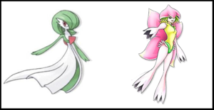

Plagio
 De: La Frikipedia, la enciclopedia extremadamente seria.
De: La Frikipedia, la enciclopedia extremadamente seria.
|
|
|
El autor de este artículo no es muy original y ha tenido que plagiar otro artículo de la Frikipedia, aunque este artículo puede ser plagiado por otra persona que a su vez plagiará el artículo plagiado, y así sucesivamente. Por lo tanto, es necesario "originalizar" el artículo; si esto no ocurre en poco tiempo, este artículo será plagiado homenajeado.
|
| De la serie artes del mundo:
|
| Plagio
|
|
|
| He aquí el plagio más conocido de todos los tiempos...
|
|
| Se practica desde...
|
que un autor nesecita inspirarse
|
| Practicantes típicos
|
Personas con falta de imaginación
|
| Técnicas básicas
|
Copiarle las respuestas de un examen a tu compañero
|
| Público objetivo
|
El espectador inocente
|
| Dificultad
|
Es fácil, pues no necesitan imaginacion propia
|
| Nivel de frikismo
|
medio
|
| Máximo exponente
|
American Dad
|
El Plagio es una obra que le falta una "caracteristica principal", o en otros casos un "toque artistico", por eso su autor se inspira en otras obras originales, copiando sus características, pero con otro estilo (la mayoria de las veces sale mucho peor), y así sale una obra muy inspirada a otra, denominada plagio...
Características del plagio
 Una vez que notas un plagio te das cuenta de lo obvio que era (nótese que ambas tienen una cosa roja en el pecho)
Básicamente, la principal característica del plagio es que el producto terminado es sospechosamente parecido al producto original. Como cuando sacas una fotocopia en una fotocopiadora en la que hay que cambiarle el cartucho de tinta (más o menos, porque hay productos idénticos). Lo segundo es que ¡no es necesario pedirle permiso al autor! Así que el arte del plagio está al alcance de los niños cualquier persona.
¿Tienes dotes de escritor pero no tienes ideas? ¡No importa! Puedes agarrar un libro que no leas mucho (como una novela de Corín Tellado o el pintura? Con creyones y un libro de arte puedes pintar como Picasso. ¿Quieres cantar en el casting de Operación Triunfo? Presenta las canciones de David Bustamante como si fueran tuyas....Y así sucesivamente..
Tipos de plagio
Hay varios tipos de plagio, desde pequeñines hasta grandecitos. Nos hemos tomado la molestia de mencionar algunos aqui:
Según su calidad
Coldplay tiene unas canciones muy buenas..Me recuerdan a
Kraftwerk - Mal hecho: El plagio más común. Es cuando utilizas el Paint para realizar el logo de Coca Cola, o cuando grabas la película de moda con una videograbadora para grabarla en un DVD y venderla en el mercado negro. También llamado plagio pirata (sí, One Piece también cuenta en esta categoría).
- Regular: Mal llamado "homenaje", "guiño" o "parodia", es cuando agarras un objeto, lo desarmas, ves su funcionamiento e intentas construirlo por tu cuenta. También llamado "producto chino". Generalmente cuesta un poco más, pero los resultados muchas veces son satisfactorios, incluso más exitosos que el original. Las parodias se realizan en plan cómico, y los homenajes son en honor a alguien (La Wikipedia no cuenta, pues no es mejor que la Frikipedia. La Inciclopedia sí es una parodia)..
- Bien hecho: En pocas ocasiones, el producto plagiado funciona mejor que el original, pero si el producto plagiado NO parece copiado del original, es que es un producto original, así que no sabes plagiar. La idea del plagio es que se parezca al original. ¿Capisce?
Según su temática
- Literario: es cuando te copias un libro, le agregas detalles locos, le cambias el nombre, la edad y la orientación sexual de los personajes, los pones en un mundo paralelo y esperas los millones por las ventas. Ejemplos: Harry Potter, El Quijote, Crepúsculo, El Corán, entre otros..
- De personajes: no es tan importante, pero se da cuando agarras un personaje y lo conviertes en otra cosa, es decir, si agarras a un mago y lo conviertes en un gafapastas. Ejemplos: Naruto Uzumaki, Peter Griffin,...
- Musical: Muchas veces un artista agarra un tema famoso de otro artista, le cambia la letra y ya tiene el próximo éxito de verano. Es uno de los plagios más divertidos, pues las emisoras colocan la canción original y el plagio en una misma tanda de canciones. Algunas veces el plagio termina entre las más escuchadas de las carteleras musicales. Ejemplos: ABBA, David Bustamante y David Bisbal, ¡Vanilla Ice y los Rolling Stones!,..
- Descarado: El más común. Se realiza para ir a juicio, contrademandar al autor original y ganar unos cuantos leros.
Autoplagio
El autoplagio es cuando copio un modelo de Lost Universe de Slayers.
Ejemplos de plagio
Típico plagio de Digimon ¿o era un plagio de Pokemon?
Controversia
Siempre hay gente quejica, este caso no es la excepción. Hay gente que se queja de que no cobra derechos de autor por un plagio, sin saber que esa es la parte más divertida. Además, la ventaja es que la obra original y/o la copia reciben alta difusión gracias a los demandas.
El plagio es la forma más fácil de hacerte rico y famoso (¿como crees que lo consiguió 50 Cent? Se copio de Snoop Dog, Snoop Dog de Tupac...y así hasta llegar hasta Dios que se copio del Innombrable)
Hasta yo soy un plagiador... ¡Me estoy copiando de mi propia mente!
Plagios célebres
Enlaces externos
Autor(es):
- Mad Max
- AlemanH
- Claudiobueno123
- Dark temptation
- Catacras
- El segundo mas poderoso
- Josemix
- Harry El del Pote
- Krusher.
- Kevin83276
Frikipedia 2005-2016, Licencia
GFDL 1.2 - Extraído por FrikiLeaks